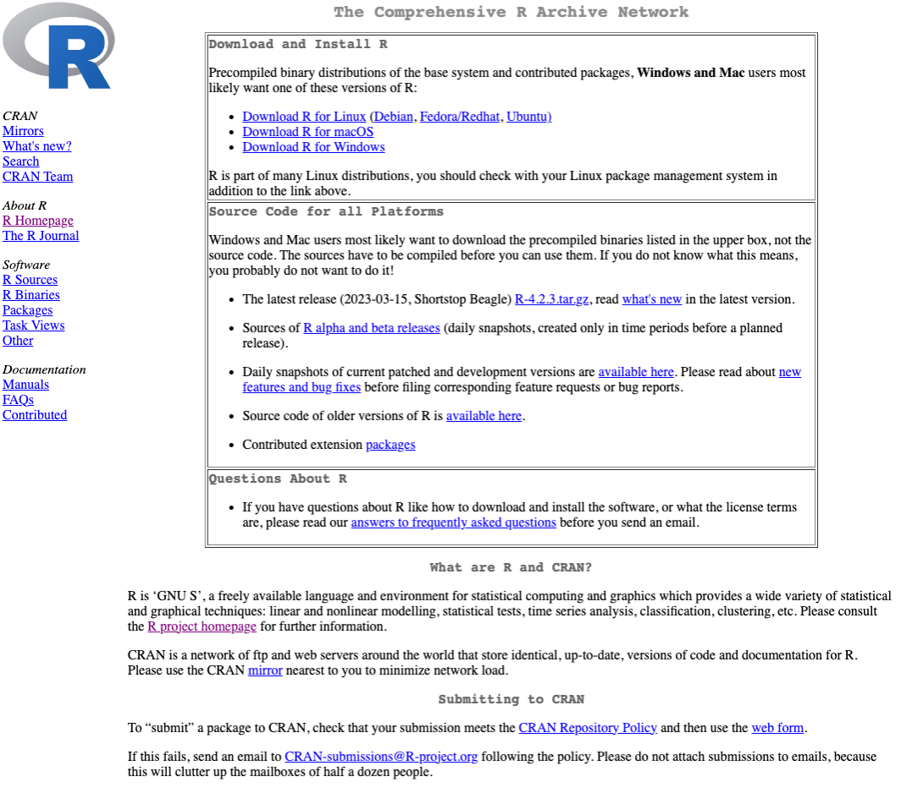
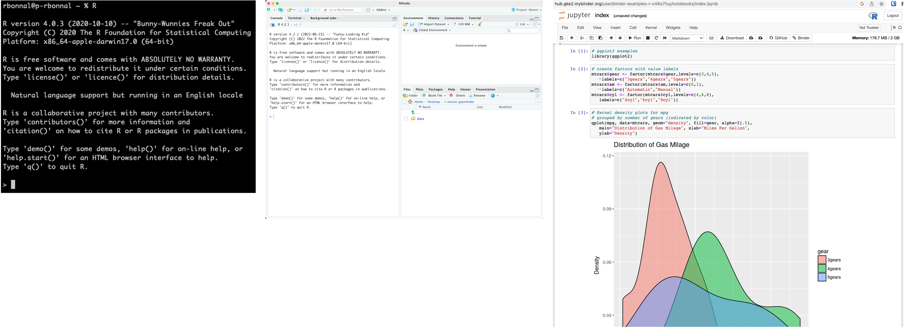
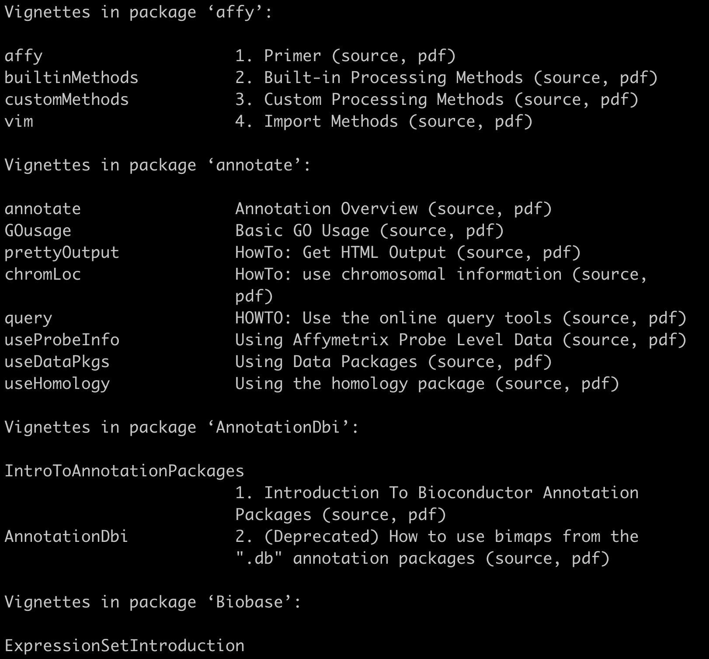
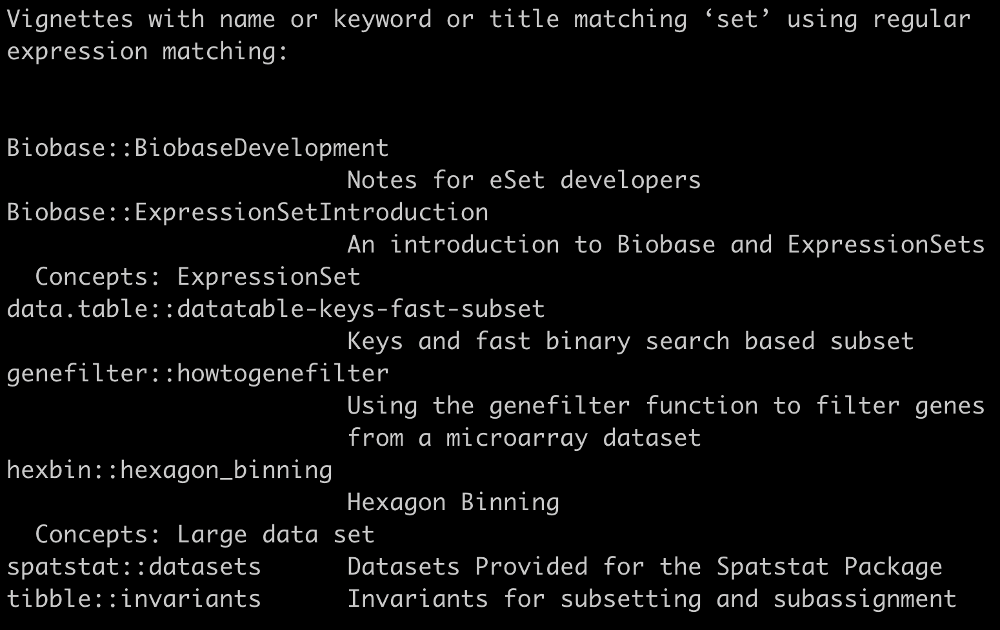
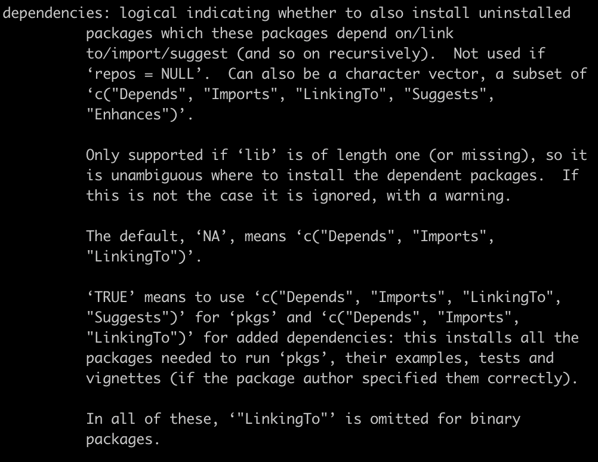

Introduction to R
Raoul Jean Pierre Bonnal
Raoul Jean Pierre Bonnal


Raoul Jean Pierre Bonnal
2023-03-27
R is a programming language for statistical computing and graphics supported by the R Core Team and the R Foundation for Statistical Computing.
R is used among data miners, bioinformaticians and statisticians for data analysis and developing statistical software.
Users have created packages to augment the functions of the R language.
R is one of the most commonly used programming languages in data mining
As of December 2022, R ranks 11th in the TIOBE index, a measure of programming language popularity, in which the language peaked in 8th place in August 2020.
The official R software environment is an open-source free software environment within the GNU package, available under the GNU General Public License.
It is written primarily in C, Fortran, and R itself (partially self-hosting). Precompiled executables are provided for various operating systems.
R was started by professors Ross Ihaka and Robert Gentleman as a programming language to teach introductory statistics at the University of Auckland.
The name of the language comes from the shared first letter of the authors, Ross and Robert.
https://www.r-project.org/ 
CRAN is a network of ftp and web servers around the world that store identical, up-to-date, versions of code and documentation for R. Please use the CRAN mirror nearest to you to minimize network load. ~90 and growing…
The Comprehensive R Archive Network (CRAN) was founded in 1997 by Kurt Hornik and Fritz Leisch to host R’s source code, executable files, documentation, and user-created packages.
Its name and scope mimics the Comprehensive TeX Archive Network and the Comprehensive Perl Archive Network.
CRAN originally had three mirrors and 12 contributed packages. As of December 2022, it has 103 mirrors and 18,976 contributed packages.
https://cran.r-project.org/ 

R has a CLI. Multiple third-party GUI: RStudio, an IDE, and Jupyter, a notebook interface.
in your Almalinux 9 update the available system packages:
Once the update is completed, enable the EPEL and CRB on AlmaLinux 9.
Type Y when required.
Check the version
$ R --version
R version 4.1.3 (2022-03-10) -- "One Push-Up"
Copyright (C) 2022 The R Foundation for Statistical Computing
Platform: x86_64-redhat-linux-gnu (64-bit)
R is free software and comes with ABSOLUTELY NO WARRANTY.
You are welcome to redistribute it under the terms of the
GNU General Public License versions 2 or 3.
For more information about these matters see
https://www.gnu.org/licenses/.$ R
R version 4.1.3 (2022-03-10) -- "One Push-Up"
Copyright (C) 2022 The R Foundation for Statistical Computing
Platform: x86_64-redhat-linux-gnu (64-bit)
R is free software and comes with ABSOLUTELY NO WARRANTY.
You are welcome to redistribute it under certain conditions.
Type 'license()' or 'licence()' for distribution details.
Natural language support but running in an English locale
R is a collaborative project with many contributors.
Type 'contributors()' for more information and
'citation()' on how to cite R or R packages in publications.
Type 'demo()' for some demos, 'help()' for on-line help, or
'help.start()' for an HTML browser interface to help.
Type 'q()' to quit R.
> Download RStudio for Microsoft Windows
Running the RStudio under WSL2 can be a kind of experience
Open RStudio from Microsoft Windows


click on the Run button above the editor panel, or select Run Lines from the Code menu, or hit Ctrl+Return in Windows or Linuxor ⌘+Return on macOS.

swcarpentry with rstudio
A good project layout will ultimately make your life easier:
RStudio has the ability to create Projects which is self-contained and this helps in mitigating the reproducibility problem.
To create a project in RStudio:
That will create a .Rproj file in the directory of your choice.
Double clicking on the file name RStudio will open and eventually recovering the previous session.
How to recover from a previous session R uses the .RData which saves the current workspace in the current working directory.
Creates by default a .RData file, an hidden file.
Do not use a live dataset/file as input for your work. It may change overtime and others can corrupt your “schema”
Data can be dirty and in a wrong format.
Cleaning Check that data are correct, consistent
Wrangling Tranform data from one format to the other. Also known as Data Munging.
You can accomplish to this with R, the Shell, other languages, whaever you want but you MUST track the steps with code.
YOUR MEMORY CAN FAIL
Anything generated by your scripts should be treated as disposable
it should all be able to be regenerated from your scripts.
Save your code into:
you can dowload the data from the web browser, the wget,
curl, from withing R with
If you use .Rproj R sets automatically the working directory to where your project is located.
Otherwise, remember to set it manually
Check the current working directory
Set the workging directory
In the future ;)
.R scriptsEach help page is broken down into sections:
Notice how related functions might call for the same help file:
vignette is an extended documentations with tutorials and examples

Open a PDF
Fuzzy search

thanks to swcarpentry.github.io
Every programming language:
Do you remmeber CRAN?


> install.packages("A3")
Installing package into ‘/Users/rbonnal/Library/R/4.0/library’
(as ‘lib’ is unspecified)
--- Please select a CRAN mirror for use in this session ---this is under macOS
> install.packages("A3")
Installing package into ‘/Users/rbonnal/Library/R/4.0/library’
(as ‘lib’ is unspecified)
--- Please select a CRAN mirror for use in this session ---R will download automatically all the dependencies.
RTF

